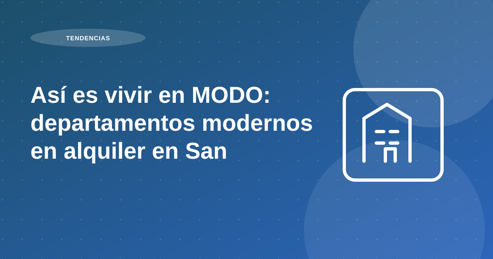

Así es vivir en MODO: departamentos modernos en alquiler en San Miguel

El Edificio MODO , gestionado por Proper Rentas , es uno de los primeros edificios multifamily del Perú: un proyecto diseñado exclusivamente para alquiler formal, moderno y sin complicaciones.
Con más de 200 departamentos en alquiler en San Miguel , MODO redefine la experiencia de vivir en Lima con espacios bien distribuidos, procesos digitales, contratos claros y atención personalizada para el inquilino.
San Miguel es uno de los distritos más demandados para alquilar en Lima, y no es casualidad. Vivir en San Miguel combina conectividad, acceso a servicios, calidad de vida y cercanía al mar.
Tabla de contenidos
- A. Edificio MODO: vivir como debe ser
- B. ¿Por qué vivir en San Miguel?
- Principales beneficios de vivir en San Miguel:
- C. ¿Qué hace especial al Edificio MODO?
- D. MODO + Proper Rentas = alquilar sin preocupaciones
- E. ¿Quiénes eligen vivir en MODO?
- F. Conclusión: MODO es vivir en modo fácil
A. Edificio MODO: vivir como debe ser
El Edificio MODO , gestionado por Proper Rentas , es uno de los primeros edificios multifamily del Perú: un proyecto diseñado exclusivamente para alquiler formal, moderno y sin complicaciones.
Con más de 200 departamentos en alquiler en San Miguel , MODO redefine la experiencia de vivir en Lima con espacios bien distribuidos, procesos digitales, contratos claros y atención personalizada para el inquilino.
Recomendación operativa: traduce la tendencia del mercado a decisiones concretas de producto, precio y experiencia. El dato por sí solo no genera resultado si no se convierte en ejecución.
B. ¿Por qué vivir en San Miguel?
San Miguel es uno de los distritos más demandados para alquilar en Lima, y no es casualidad. Vivir en San Miguel combina conectividad, acceso a servicios, calidad de vida y cercanía al mar.
Recomendación operativa: traduce la tendencia del mercado a decisiones concretas de producto, precio y experiencia. El dato por sí solo no genera resultado si no se convierte en ejecución.
Principales beneficios de vivir en San Miguel:
🟣 Ubicación estratégica: Conecta con todo Lima a través de las avenidas La Marina, Universitaria y Faucett. Cerca del aeropuerto, el Centro de Lima, la Costa Verde y más.
🟣 Cercanía a universidades: A minutos de la PUCP , UPC , UNMSM y otras instituciones educativas de prestigio.
🟣 Servicios a la mano: Supermercados, centros comerciales como Plaza San Miguel , Open Plaza , clínicas, bancos y tiendas están a solo unos pasos.
🟣 Vista al mar y áreas verdes: Acceso directo a la Costa Verde, parques y ciclovías para un estilo de vida activo y saludable.
Recomendación operativa: traduce la tendencia del mercado a decisiones concretas de producto, precio y experiencia. El dato por sí solo no genera resultado si no se convierte en ejecución.
C. ¿Qué hace especial al Edificio MODO?
Alquilar en MODO es diferente porque ha sido pensado para ofrecer una experiencia de vida completa . Aquí no solo arrendas un departamento, te mudas a una comunidad diseñada para facilitar tu día a día .
✔ Departamentos modernos de 1, 2 y 3 dormitorios ✔ Pet friendly 🐶 ✔ Áreas comunes: lobby, zona de coworking, rooftop ✔ Estacionamiento para bicicletas y motos ✔ Seguridad 24/7 ✔ Contratos 100% digitales ✔ Atención personalizada durante toda tu estadía
Recomendación operativa: traduce la tendencia del mercado a decisiones concretas de producto, precio y experiencia. El dato por sí solo no genera resultado si no se convierte en ejecución.
D. MODO + Proper Rentas = alquilar sin preocupaciones
La experiencia MODO no sería posible sin Proper Rentas, la PropTech que lidera la transformación del alquiler formal en Lima . Con su tecnología y equipo especializado, Proper garantiza:
🔒 Contratos claros y transparentes 📲 Firma digital desde tu celular 💬 Soporte continuo vía WhatsApp 🧹 Mantenimiento profesional 📅 Gestión puntual de pagos y renovaciones
¿El resultado? Una experiencia de alquiler ágil, segura y sin fricciones. Tú solo disfrutas tu nuevo hogar.
Recomendación operativa: traduce la tendencia del mercado a decisiones concretas de producto, precio y experiencia. El dato por sí solo no genera resultado si no se convierte en ejecución.
E. ¿Quiénes eligen vivir en MODO?
MODO responde a una nueva forma de vivir: conectada, práctica y libre de complicaciones.
- Jóvenes profesionales que buscan independencia en un lugar céntrico
- Parejas que valoran comodidad, servicios y buena ubicación
- Estudiantes universitarios que priorizan la cercanía a sus centros de estudio
- Expatriados o ejecutivos que llegan a Lima por trabajo y prefieren un lugar moderno y funcional
Recomendación operativa: traduce la tendencia del mercado a decisiones concretas de producto, precio y experiencia. El dato por sí solo no genera resultado si no se convierte en ejecución.
F. Conclusión: MODO es vivir en modo fácil
MODO no es solo un edificio, es un nuevo estándar para quienes buscan departamentos en alquiler en San Miguel sin lidiar con contratos engorrosos, propietarios informales o procesos desordenados.
En un mercado donde la informalidad todavía predomina, MODO y Proper Rentas demuestran que alquilar bien sí es posible en Lima : rápido, legal y con todo lo que necesitas para vivir mejor.
🔍 ¿Buscas alquilar en San Miguel? Explora los departamentos disponibles en MODO: 👉 https://proper.com.pe/edificio-modo-departamentos-en-alquiler
- Tags: Bienes Raices , Departamentos para alquilar , INEI , Inversión de Bienes Raíces , Inversiones Inmobiliarias , Peru , Peruanos , Renta residencial , Viviendas para alquiler
Recomendación operativa: traduce la tendencia del mercado a decisiones concretas de producto, precio y experiencia. El dato por sí solo no genera resultado si no se convierte en ejecución.
Plan de acción recomendado para propietarios
En temas de mercado urbano y tendencias, la clave es convertir señales macro en decisiones micro. Comienza con un mapa de demanda por zona, ticket de alquiler viable y perfil de inquilino objetivo. Sin ese cruce, es difícil diseñar un producto realmente competitivo.
Luego, revisa atributos del inmueble que más pesan en decisión: ubicación efectiva, conectividad, funcionalidad del layout y nivel de equipamiento. En escenarios de oferta amplia, estos factores son determinantes para sostener ocupación.
Por último, diseña un plan comercial y operativo coherente con ese posicionamiento: narrativa del aviso, tiempos de respuesta, experiencia de visita y proceso de cierre. El mercado premia consistencia entre promesa y ejecución.
- Mapear demanda por tipología y zona.
- Definir propuesta de valor por segmento.
- Ajustar precio con data de mercado reciente.
- Medir tracción comercial por semana.
Errores frecuentes y cómo evitarlos
Error frecuente: copiar estrategias de otras zonas sin adaptar la propuesta al contexto del distrito. Aunque dos ubicaciones parezcan similares, el comportamiento de demanda puede cambiar de forma significativa.
Otro error es evaluar desempeño solo por visitas. Lo importante es la conversión a propuestas firmes y la calidad del perfil interesado, no solo volumen de contacto.
Indicadores para medir resultados mes a mes
Para medir si la estrategia funciona, controla tasa de conversión visita-propuesta, días promedio a cierre y porcentaje de ocupación efectiva por trimestre. Esos indicadores reflejan ajuste real entre producto y mercado.
Incluye un KPI de satisfacción del inquilino en etapa de ingreso. Una experiencia inicial ordenada mejora permanencia y reduce costos de rotación.
Preguntas frecuentes
¿Qué acelera más un alquiler: bajar precio o mejorar proceso?
Mejorar proceso primero: publicación, filtros y tiempos de respuesta suelen tener mayor impacto sostenible.
¿Qué debe estar listo antes de publicar?
Documentación, fotos reales, reglas de evaluación y rango de negociación definido.
¿Qué evita retrabajo durante la gestión mensual?
Estandarizar contrato, cobranza, registro de incidencias y reportes al propietario.
Conclusión
Al revisar así es vivir en modo: departamentos modernos en alquiler en san miguel, la conclusión principal es que la rentabilidad no depende de una sola decisión, sino de la calidad del proceso completo: análisis previo, ejecución comercial, filtro, contrato y administración mensual.
Si priorizas estandarización, medición y mejora continua, reduces vacancia, controlas riesgo y sostienes mejores resultados para tu propiedad en el tiempo.